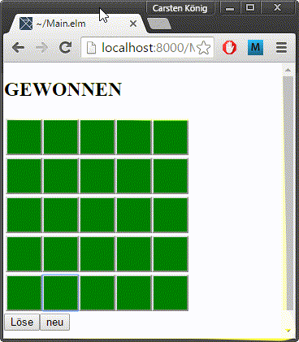
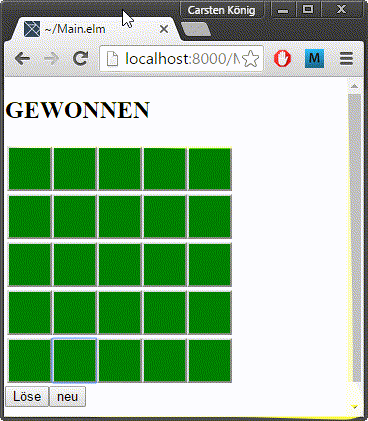

LichterAus
das "LightsOut" Puzzle in Elm

Lösungsalgorithmus
Benutzt eine vereinfachte Form des Gaußschen Eliminationsverfahrens um einen Spiel-Zustand zu lösen.
das "LightsOut" Puzzle in Elm

Benutzt eine vereinfachte Form des Gaußschen Eliminationsverfahrens um einen Spiel-Zustand zu lösen.